Easy sign-in
The Accounts tab makes it simple: Log-in through your browser, add your authentication code, and you're set!
The Pirate Radio Launcher is the all-in-one solution for playing Knockout City - Private Server Edition. Plus, enjoy features like account syncing, mod support, and more!
Also for: macOS (Apple silicon) Linux AppImage .deb .rpm
What can it do?
The Accounts tab makes it simple: Log-in through your browser, add your authentication code, and you're set!
Every community server across both major API's are available. TCNS is exclusive to the Pirate Radio Launcher.
The Launcher handles content updates on a per-server basis, keeping everything in working order.
Browse and install community mods from inside the launcher: outfits, props, animations, and more, built with Pirate Radio Labs.
New server? no problem. Sync your account settings and locker loadouts across all servers! (Street Rank is per-server, though!)
The Launcher extends game support to macOS, Linux, and more. Plus, patch the Low-Res build of the game for lighter hardware.
What's new
Released recently. Notes are pulled live from GitHub, so this is always the current build.
Report a bug
For mod makers
Pirate Radio Labs opens the game's files and ships your work straight to this launcher's mod library.